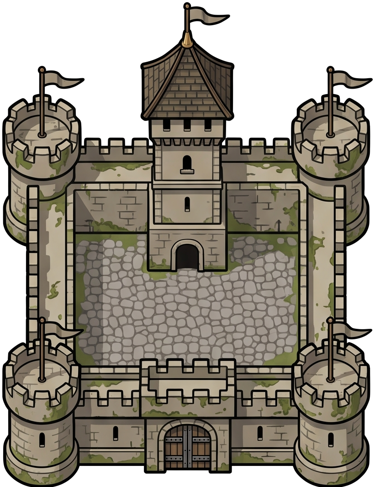
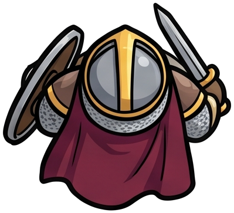
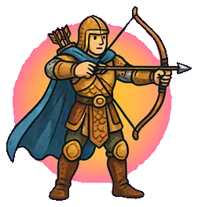

Cargando gráficos…



Destruye el Centro Urbano enemigo. Cuadrilátero: Arquero > Milicia > Piquetero > Jinete > Arquero.
Partida completa en 3 ranuras locales. No disponible en multijugador.
Sprites cargados desde assets/sprites/.
■ Recursos tú ■ Recursos rival ┅ Ejército tú ┅ Ejército rival